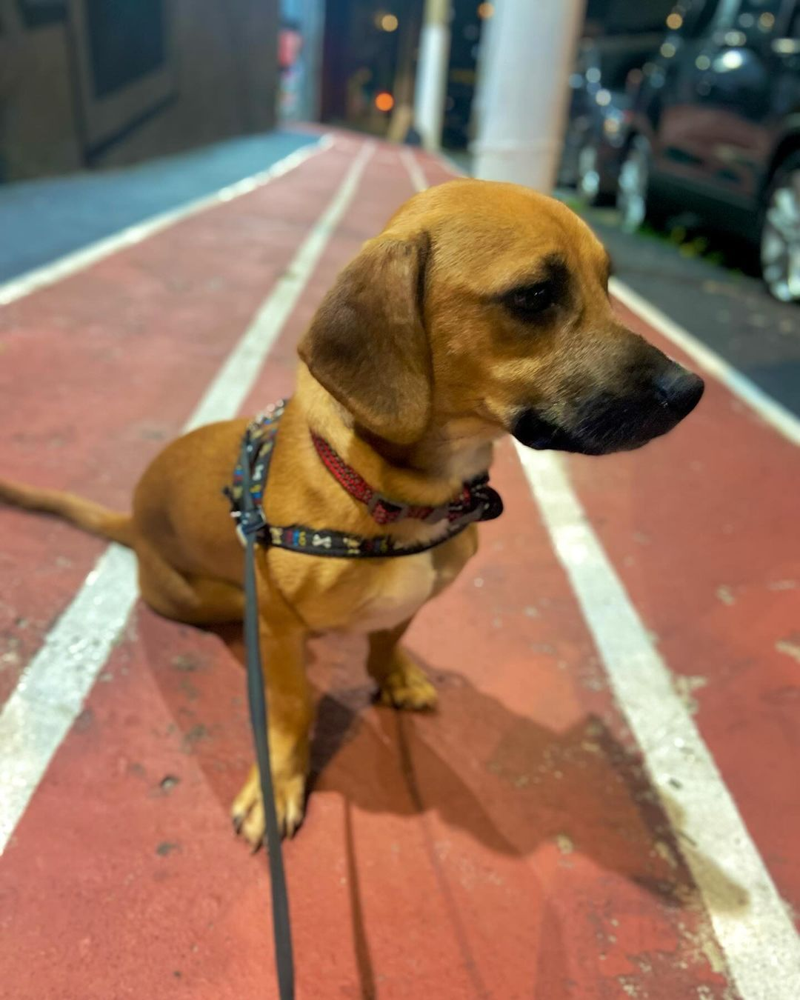

Maike Almeida e Fredy
"Adotar o Fredy mudou completamente minha vida. O Fredy é super calminho e tranquilo. O Projeto Pacotinho de Amor fez um trabalho incrível, e a adoção foi muito fácil. Recomendo a todos!" - Maike Almeida
"Adotar o Fredy mudou completamente minha vida. O Fredy é super calminho e tranquilo. O Projeto Pacotinho de Amor fez um trabalho incrível, e a adoção foi muito fácil. Recomendo a todos!" - Maike Almeida
"Adotei a pandora quando ela tinha 3 aninhos. Sempre tive o sonho de ter um cachorro, e na busca de realizar esse sonho, acabei encontrando o Projeto Pacotinho Amor." - Sarah Alves
Participe das nossas feirinhas de adoção e ajude a encontrar um lar para muitos animais carentes! Toda ajuda é bem-vinda, seja adotando ou divulgando.